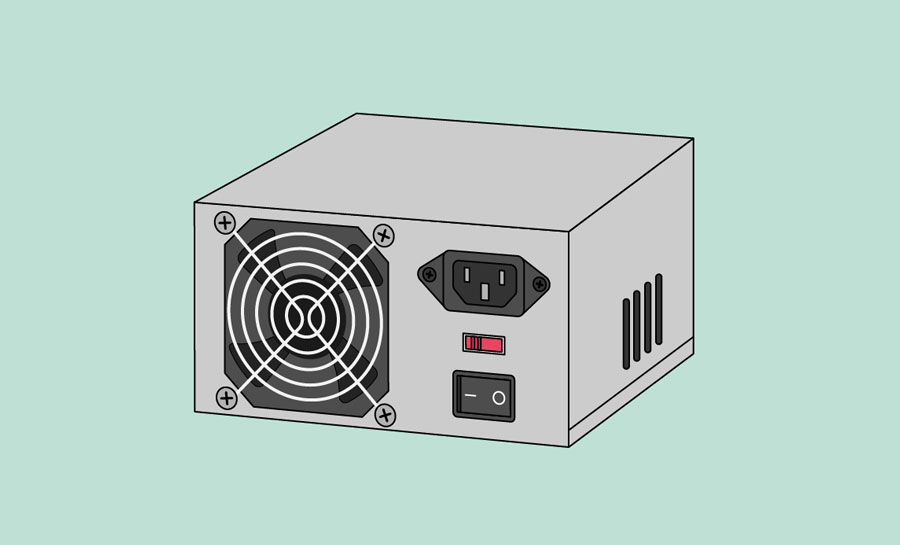

information from the brain.
.png)


| Sr.No | image | Name | Discription |
|---|---|---|---|
| 1 | Memory | Memory is the process of storing and retrieving information from the brain. |
|
| 2 | |
Control unit | The control unit manages instruction processing and coordinates data flow within the CPU and between other computer components. |
| 3 | storage | The memory or storage unit can store data, instructions and immediate results | |
| 4 | Buses | Buses are used to send control signals and data between the processor and other components. | |
| 5 | |
Register | Registers are an essential component of a computer's memory. |
| 6 | Cooling fan | A computer system or laptop uses electricity to operate and produces heat in the proces | |
| 7 | Case | A computer case, also known as a computer chassis, tower, system unit, cabinet, base unit, or simply case, is the enclosure that contains most of the ... | |
| 8 | |
Memory managment unit | The memory management unit (MMU) manages the data flow between the main memory (RAM) and the CPU. |
| 9 | Ethernet card | The network card allows your computer to communicate over a network and access the Internet. | |
| 10 | hard drive | The hard drive is where your software, documents, and other files are stored. | |
| 11 | arithmeric operation | ALU is the main component in a processor that performs various arithmetic and logic operations. | |
| 12 | |
Motherboard | The motherboard is the main circuit board and is connected to everything. |
| 13 | |
video card | The video card is responsible for what you see on the monitor | 14 |  | Power supply | The power supply port provides electricity that activates the entire computer system. |
| 15 | microcode unit | A "microcode unit" in a CPU refers to a dedicated section of memory within the processor that stores low-level instructions called "microcode, |